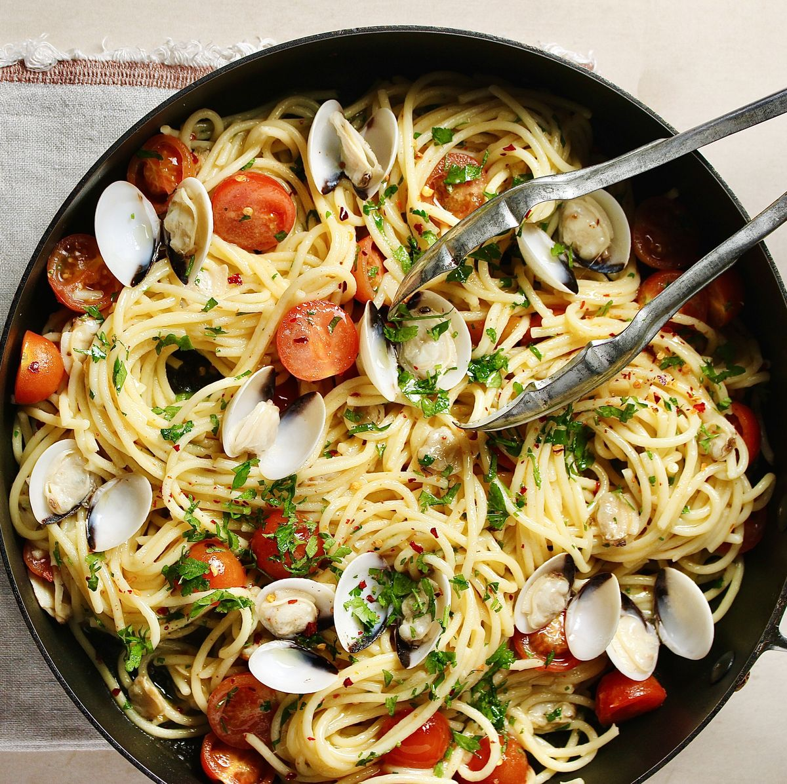

Spaghetti Alle Vongole (Linguine with clams)

See below for a list of ingredients and step-by-step instruction. Serves 2, Total time:25 mins
Ingredients:
- 600 g clams, washed.
- 4 tbsp. olive oil.
- 3 garlic cloves, crushed.
- 15 g flat leaf parsley, stems removed and leaves finely chopped.
- 200 g spaghetti.
- 100 ml white wine
- 100 g cherry tomatoes
- 1/2 tsp. chilli flakes
Prep Steps:
- In a large saucepan over medium heat, add 2 tbsp olive oil, garlic and stems from the parsley. Stir and cook for 1 minute or until your kitchen smells fragrant and the garlic is sizzling.
- Add the clams, white wine, stir well and cover with a lid and cook for 4-5 minutes or until the clams are fully open and cooked.
- Place a colander over a large bowl and pour the contents of the pan into the colander. It's important to keep the liquid as we will use this later.
- 15 g flat leaf parsley, stems removed and leaves finely chopped.
- When the clam shells are cool enough to touch, remove the meat from the shells, ensuring the keep around 10 to use as decoration for the top. Set aside until needed.
- Next, cook your spaghetti per the packet instruction in well salted water.
- With five minutes on the pasta remaining, place the clam pan back over medium heat and add the remaining olive oil. Add the garlic, chilli, parsley leaves and cherry tomatoes. Stir and cook for 1-2 minutes or until the tomatoes are starting to cook.
- Add 4tbsp of the reserved clam liquid along with the clams. Stir and cook for a minute, or until the clams have reheated. Once the spaghetti is cooked, use tongs to drag over to the clam pan. Stir until nicely coated and serve.